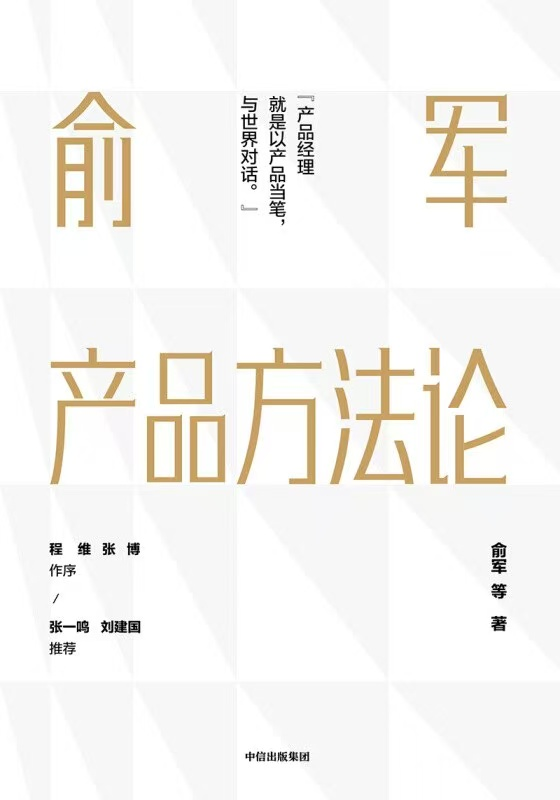
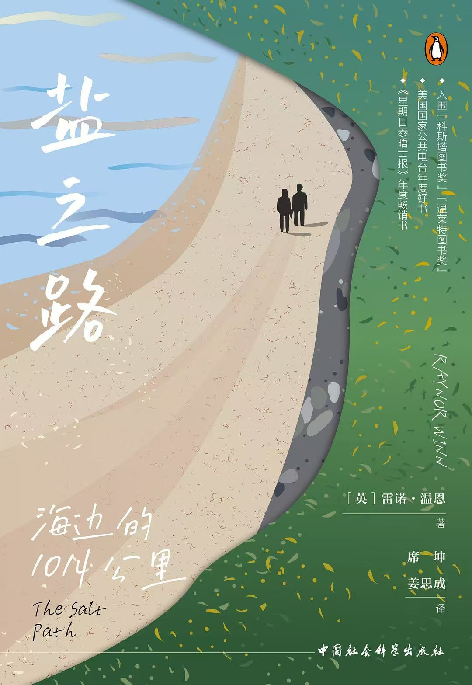
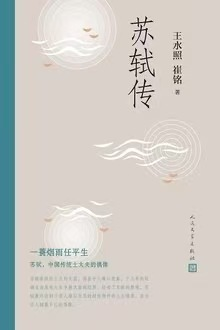
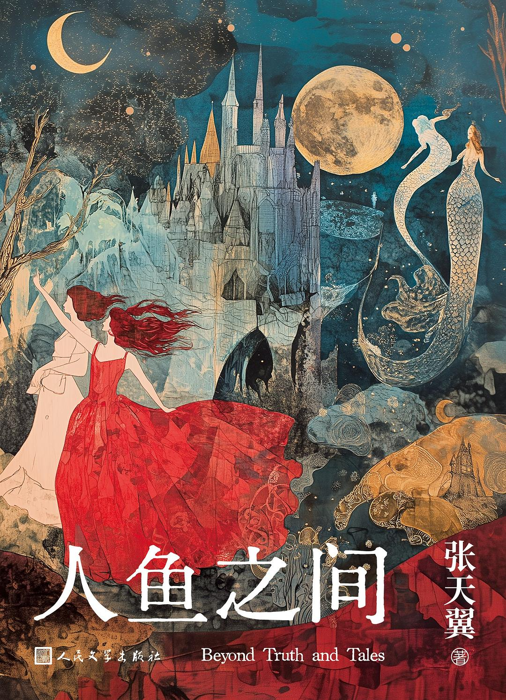
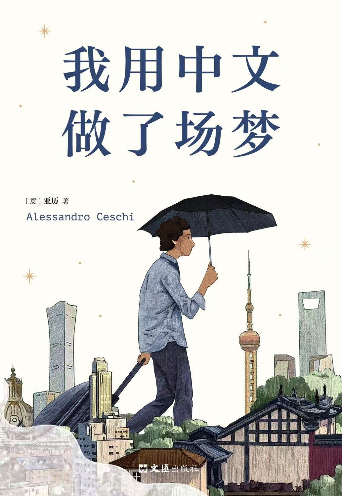
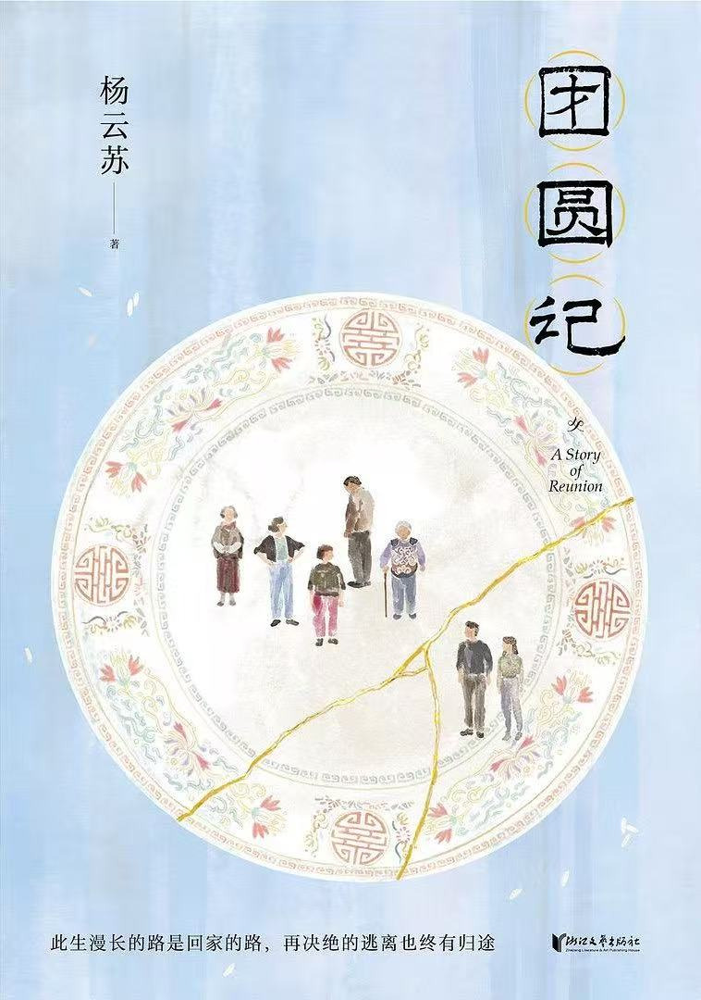

READING JOURNAL
2025
阅读手帖
文字与时光
温柔相伴的一年
温柔相伴的一年
01 / Reading Hours
这一年
在书海里沉潜
在书海里沉潜
129
相当于围着西湖骑行
43 圈
或是飞往巴黎的
12 次旅程
"时间花在哪里
灵魂就栖息在哪里"
02 / Books Collection
翻开了 82 本书
完读率 24.4% · 持续在路上的探索
20
完整读完
62
未完待续
完读率 24.4%
03 / Reading Rhythm
阅读节奏
4月和6-7月，是最活跃的阅读时光
1月
2月
3月
4月
5月
6月
7月
8月
9月
10月
11月
12月
夏天是阅读的旺季，也许是因为白昼漫长，适合发呆和读书。
04 / Day & Night
夜猫子型读者
42.8%
18:00 - 22:00
晚间闲暇
35.7%
23:00 - 04:00
深夜沉浸
当城市入睡时
你的世界才刚刚醒来
台灯下的光圈
是通往异世界的入口
05 / Flow State
最长心流时刻
26

俞军产品方法论
进度 49%
这是一本需要耐心和毅力的好书，持续攻克中...
06 / Categories
阅读版图
横跨 8 个阅读类别
文学散文
45h
产品商业
26h
人物传记
18h
旅行文学
15h
科幻小说
12h
个人成长
8h
历史人文
3h
其他
2h
07 / Keywords
年度关键词
人生
自我
旅途
成长
沉淀
这些词汇，像一个个路标
串联起 2025 的精神轨迹
09 / Best Quotes
年度金句
"你不是太阳，但你可以
发出比太阳更温暖的光"
发出比太阳更温暖的光"
《在峡江的转弯处》
"在北京，可以靠英语生存，但需要用中文生活。"
《我用中文做了场梦》
"走路的意义，就在于让你看到世界有多宽阔，自己有多渺小。"
《盐之路》
这些文字，在某个瞬间
击中了我的心
击中了我的心
10 / Top 9 Books
年度书单
1
冬牧场
2

盐之路
3

苏轼传
4
俞军产品方法论
5

扑火
6

人鱼之间
7

我用中文做了场梦
8
在峡江的转弯处
9

团圆记
11 / Best of Year
年度之最
综合阅读时长、笔记数量与个人评分
1
《苏轼传》
王水照 崔铭
一部诗意盎然的人物志。作者以苏轼诗词为经纬，勾勒出一个豁达通透的灵魂。在宦海沉浮中，东坡先生以文字为舟，渡己渡人。读罢掩卷，如见故人。
2
《冬牧场》
李娟
李娟用她特有的细腻笔触，记录下阿勒泰冬牧场的寒冷与温情。那些牧民、羊群、风雪，都成为时间的标本。这是一曲行将消逝的游牧挽歌，也是对大地最深情的注视。
3
《在峡江的转弯处》
陈行甲
一个人的转场之旅。从体制内到公益界，陈行甲用克制而诚恳的文字，书写选择与代价、理想与现实。你不是太阳，但你可以发出比太阳更温暖的光——这是他的信念，也是这个时代的微光。
12 / Special Awards
特别奖项
相见恨晚奖
《冬牧场》
2010年出版的经典，2025年才读完
评分 9.0
评分 9.0
最难啃奖
《俞军产品方法论》
阅读 25.9 小时，进度仅 49%
一本需要反复咀嚼的思维之书
一本需要反复咀嚼的思维之书
烂尾之书
《我在上东区做家教》
进度 42%，6月放弃
或许是与内心期待不符
或许是与内心期待不符
13 / King of Quotes
划线最多的书
391
条笔记与划线
《我用中文做了场梦》
意大利青年作家 亚历
"这本书中，每一段文字
都是跨文化对话的温柔注脚"
2025 阅读手帖
129
HOURS
82
BOOKS
每一本书都是一次旅行
2026，继续在文字里流浪
— THE END —